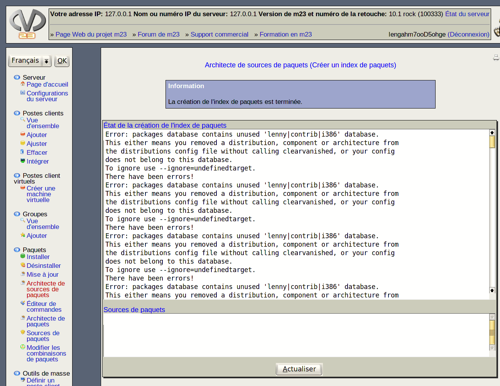

Ci-dessus, s'affiche l'état de la création du fichier index des paquets. Cliquez sur Actualiser de temps en temps afin d'actualiser l'état. Après la création du fichier index, vous pouvez utiliser la source de paquets.
Sources de paquets: Ici, la liste de sources de paquets correspondante à votre source de paquets est affichée. Si vous souhaitez installer un poste client à partir de votre source de paquets, copiez les lignes affichées et ajoutez-les à la liste des sources de paquets du poste client.
root
2015-09-06